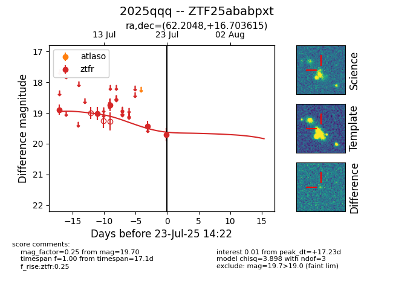

Target ZTF25ababpxt at 2025-07-23 14:22, see:
FINK: fink-portal.org/ZTF25ababpxt
Lasair: lasair-ztf.lsst.ac.uk/objects/ZTF25ababpxt
ALeRCE: alerce.online/object/ZTF25ababpxt
TNS: wis-tns.org/object/2025qqq
YSE: ziggy.ucolick.org/yse/transient_detail/2025qqq
alt names
ZTF25ababpxt (ztf,fink)
2025qqq (tns,yse)
coordinates:
equatorial (ra, dec) = (62.2048,+16.70361)
galactic (l, b) = (176.2969,-25.10639)
photometry
last ztfr=19.70
5 ztfr detections
